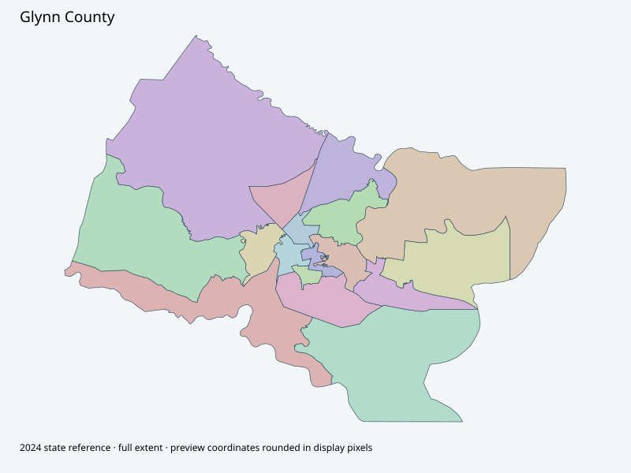

Map index · 17 explicit-FIPS 2024 map rows; 17 historical result identities. No approved crosswalk.

Full native coordinate/attribute extraction (gzip JSON) · Original complete statewide ZIP
Official election page explicitly states Board adopted new mapsJanuary14,2026 and links high-resolution original. PDF and14-feature native service captured; service description still references2019/2025 clocks. Documentary2026 adoption does not independently establish November reporting crosswalk.
Full objects, county source IDs/clocks and attributes: all 2,701 native contexts. isVirtual:false and source label precinct do not prove physical geometry.
| Source name | Full source GUID | Breakdown ordinal | Source | Map status |
|---|---|---|---|---|
| ARCO | 01000000-d884-2e72-0f09-08dcda4bb8d7 | 0 | 2024NovGen--glynn-county-ga | unreviewed / no approved map join |
| BAL | 01000000-d884-2e72-a168-08dcda4bb8e0 | 1 | 2024NovGen--glynn-county-ga | unreviewed / no approved map join |
| BLY | 01000000-d884-2e72-5f8f-08dcda4bb8ea | 2 | 2024NovGen--glynn-county-ga | unreviewed / no approved map join |
| BRK | 01000000-d884-2e72-9751-08dcda4bb8f8 | 3 | 2024NovGen--glynn-county-ga | unreviewed / no approved map join |
| COG | 01000000-d884-2e72-3f3c-08dcda4bb902 | 4 | 2024NovGen--glynn-county-ga | unreviewed / no approved map join |
| CPM | 01000000-d884-2e72-6907-08dcda4bb90b | 5 | 2024NovGen--glynn-county-ga | unreviewed / no approved map join |
| CSSI | 01000000-d884-2e72-8b9d-08dcda4bb914 | 6 | 2024NovGen--glynn-county-ga | unreviewed / no approved map join |
| CST | 01000000-d884-2e72-2f6b-08dcda4bb91e | 7 | 2024NovGen--glynn-county-ga | unreviewed / no approved map join |
| HCP | 01000000-d884-2e72-4078-08dcda4bb929 | 8 | 2024NovGen--glynn-county-ga | unreviewed / no approved map join |
| HLD | 01000000-d884-2e72-c356-08dcda4bb932 | 9 | 2024NovGen--glynn-county-ga | unreviewed / no approved map join |
| JI | 01000000-d884-2e72-09b5-08dcda4bb93c | 10 | 2024NovGen--glynn-county-ga | unreviewed / no approved map join |
| MAR | 01000000-d884-2e72-3cf1-08dcda4bb945 | 11 | 2024NovGen--glynn-county-ga | unreviewed / no approved map join |
| NGLY | 01000000-d884-2e72-824a-08dcda4bb94e | 12 | 2024NovGen--glynn-county-ga | unreviewed / no approved map join |
| NSSI | 01000000-d884-2e72-e5a2-08dcda4bb957 | 13 | 2024NovGen--glynn-county-ga | unreviewed / no approved map join |
| SSSI | 01000000-d884-2e72-66e3-08dcda4bb961 | 14 | 2024NovGen--glynn-county-ga | unreviewed / no approved map join |
| THE | 01000000-d884-2e72-a842-08dcda4bb96b | 15 | 2024NovGen--glynn-county-ga | unreviewed / no approved map join |
| UPP | 01000000-d884-2e72-2f30-08dcda4bb975 | 16 | 2024NovGen--glynn-county-ga | unreviewed / no approved map join |
| Original row ordinal | DISTRICT | PRECINCT_I | PRECINCT_N |
|---|---|---|---|
| 1851 | 127101MAR | 101MAR | MAR |
| 1852 | 127103BRK | 103BRK | BRK |
| 1854 | 127301COG | 301COG | COG |
| 1855 | 127102BLY | 102BLY | BLY |
| 1856 | 127504ARO | 504ARO | ARCO |
| 1857 | 127501HCP | 501HCP | HCP |
| 1858 | 127502UPP | 502UPP | UPP |
| 1859 | 127500CPM | 500CPM | CPM |
| 1860 | 127402THE | 402THE | THE |
| 1861 | 127104JI | 104JI | JI |
| 1862 | 127203SSI | 203SSI | SSSI |
| 1863 | 127202CSI | 202CSI | CSSI |
| 1864 | 127304BAL | 304BAL | BAL |
| 1865 | 127302HLD | 302HLD | HLD |
| 1866 | 127401CST | 401CST | CST |
| 1867 | 127303NGY | 303NGY | NGLY |
| 1868 | 127201NSI | 201NSI | NSSI |